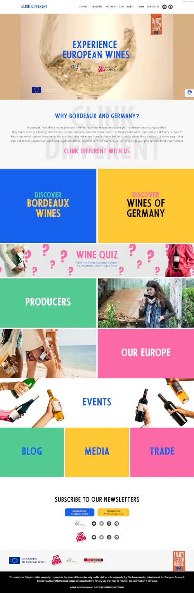 × Close Clink Different 2023 - Present Collaborated with RFBinder to create a website that promotes Wines of Germany and Bordeaux Wines throughout the United States. You might think these two regions are different, but look more closely, and you’ll discover fascinating parallels. They share history, amazing landscapes, culture, culinary passions and a modern outlook on the wine traditions of old. There is more to these renowned regions than meets the eye: Stunning red wines from Germany. Delicious white wines from Bordeaux. Explore surprising styles, discover unparalleled wine-sipping destinations, and dive into our culinary culture. Challenge your perceptions (and your palates). Responsibilities Programming Custom Modules Implementing Custom Theme Server Management Design Contributions Maintenance and Updates Technology WordPress Elementor PHP JavaScript jQuery
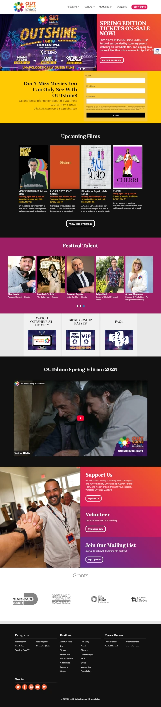 × Close OUTShine Film Festval 2011 - Present Created and maintained several iterations of websites for the OUTShine Film Fstival. Worked with them to determine site requirements and establish their brand identy's look and feel. The OUTshine LGBTQ+ Film Festival is South Florida’s premier LGBTQ+ cultural arts event, originating from the Miami Gay & Lesbian Film Festival (1998) and the Fort Lauderdale Gay & Lesbian Film Festival (2008). Responsibilities Project Manager Created Fully Custom Backend Site Design and Layout Front-end Implementation Database Design and Management Maintenance and Updates Technology CakePHP MySQL PHP JavaScript jQuery
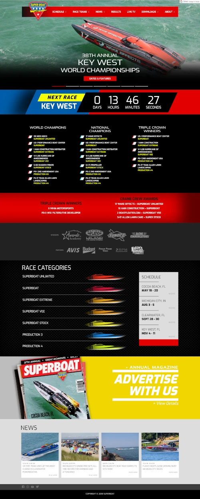 × Close Super Boat International 2018 - 2020 Created and maintained the Super Boat International website until the owner, John W. Carbonell III's, passing in 2020. Super Boat International was the premier national and international sanctioning body for offshore powerboat racing around the world, with an estimated million race fans attending Super Boat International races yearly. Responsibilities Created Fully Custom Backend Front-end Implementation Database Design and Management Maintenance and Updates Design Contributions Technology CakePHP MySQL PHP JavaScript jQuery
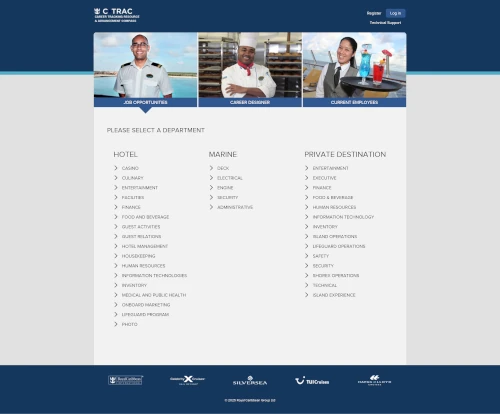 × Close RCL C-TRAC - Career Tracking Resource & Advancement Compass 2013 - Present Created a hiring system for Royal Caribbean International to replace their previous off-the-shelf solution, saving them money, and giving them greater control and better integration with their processes. Upon completion, handed over to their in-house team for maintenance and updates. Royal Caribbean Group is a vacation industry leader with a global fleet of 67 ships across its five brands traveling to all seven continents. Responsibilities Front-end Implementation Back-end contributions Database Design Front-end Design Technology CakePHP MySQL PHP JavaScript jQuery
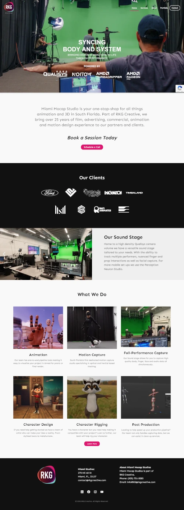 × Close Miami Mocap 2024 - Present Designed and created an in-house website for RKG Creative's Motion Capture Studio. Responsibilities Created the Design to align with brand's goals Programming Custom Modules Implementing Custom Theme Server Management Assisted in Content Creation Technology WordPress Elementor PHP JavaScript jQuery
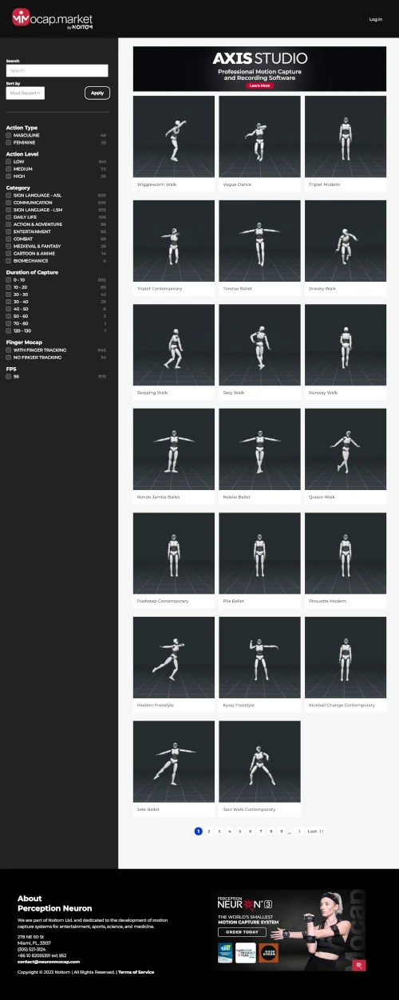 × Close Mocap Market 2022 - Present Created a Drupal based, searchable library of motion capture clips that utilizes three.js to display interactive 3D files. Also created a script in Blender Python API to automatically export standardized video thumbnails to replace the time consuming and inconsistent method of using screen captures. Responsibilities Created the Design to align with brand's goals Programming Custom Modules Implementing Custom Theme Server Management Video Output and resizing from Blender files Technology Drupal Python Bash Shell Script Blender Blender Python API three.js PHP JavaScript jQuery
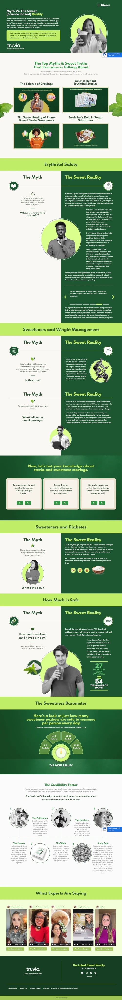 × Close The Sweet Reality 2022 - Present Created a Single Page informational website for Truvia that provides information supporting Erythritol and Stevia safety. From erythritol and weight management to diabetes and heart health, we’re breaking down the myths surrounding sweeteners with some science-based sweet reality. Responsibilities Front-end Programming Programming Custom Modules Implementing Custom Theme Server Management Design Contributions GDPR and Cookie compliance Created Interactive quizes Technology WordPress Elementor PHP JavaScript jQuery
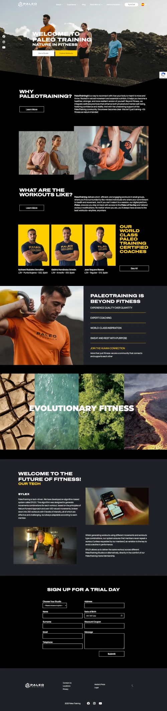 × Close Paleo Training 2022 - Present Created a multi-lingual website for Spain based Fitness Gym. PaleoTraining is a fitness company that blends technology with functional training and natural principles of movement, nutrition, wellness, and community. Responsibilities Front-end Programming Programming Custom Modules Implementing Custom Theme Design Contributions Internationalization Technology WordPress Elementor PHP JavaScript jQuery
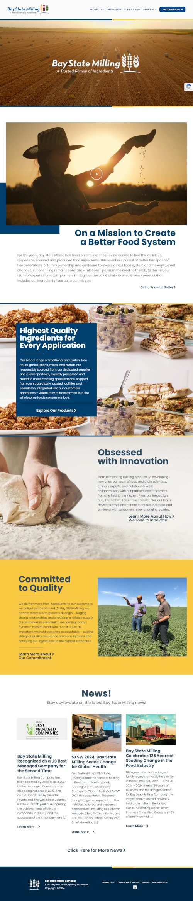 × Close Paleo Training 2021 - Present Created a corporate website for Grain Milling Company. For 125 years, Bay State Milling’s purpose has been to provide food ingredients to promote the growth of nutritious, sustainable and accessible food choices. This relentless pursuit of better has spanned five generations of family ownership and continues to evolve as our food system—and the way we eat—changes. Responsibilities Front-end Programming Programming Custom Modules Implementing Custom Theme Design Contributions Technology WordPress Elementor PHP JavaScript jQuery
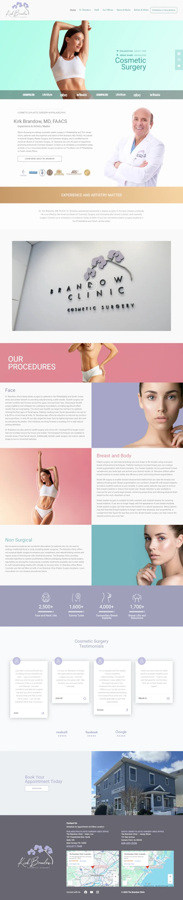 × Close The Brandow Clinic 2021 - Present Created a website for Dr. Kirk Brandow's plastic surgery practices. Dr. Kirk Brandow, MD, FAACS. Dr. Brandow specializes exclusively in plastic surgery of the face, breasts, and body. He is certified by the American Board of Cosmetic Surgery and internationally trained in plastic and cosmetic surgery. Responsibilities Front-end Programming Programming Custom Modules Implementing Custom Theme Design Contributions Technology WordPress Elementor PHP JavaScript jQuery
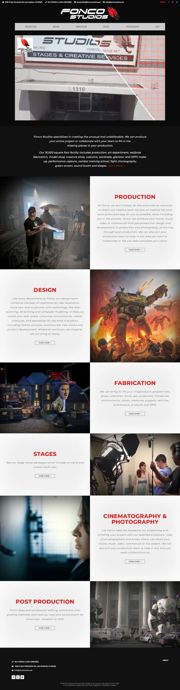 × Close Fonco Studios 2017 - Present Designed and created a portfolio and capabilities website for Los Angeles based fabrication and production studio run by Fon Davis. Fonco Studios specializes in creating the unusual and unbelievable. They can produce your entire project or collaborate with your team to fill in the missing pieces in your production. Responsibilities Site Design and Layout Front-end Programming Programming Custom Modules Implementing Custom Theme Technology CakePHP MySQL PHP JavaScript jQuery
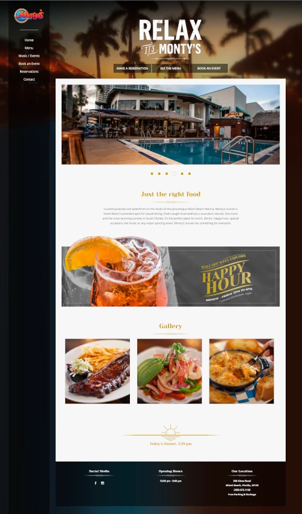 × Close Monty's Sunset 2013 - 2023 Created a website for South Beach restaurant Monty's Sunset. Located poolside and waterfront on the docks of the picturesque Miami Beach Marina, Monty’s Sunset is South Beach’s premiere spot for casual dining, fresh-caught local seafood, a succulent raw bar, live music and the most stunning sunsets in South Florida. It’s the perfect place for lunch, dinner, happy hour, special occasions, live music or any major sporting event, Monty’s Sunset has something for everyone. Responsibilities Front-end Programming Back-end Programming Programming Custom Modules Implementing Custom Theme Design Contributions Server Management Technology CakePHP MySQL PHP JavaScript jQuery